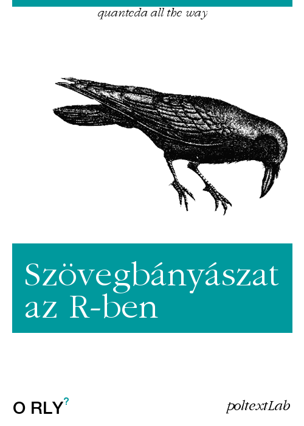

Szövegbányászat és mesterséges intelligencia R-ben
2021-04-20 17:16:12
Üdvözöljük!

A szövegek kvantitatív elemzése (quantitative text analysis – QTA) a nemzetközi társadalomtudomány egyik leggyorsabban fejlődő irányzata. A szövegek és más minőségi adatok (filmek, képek) elemzése annyiban különbözik a mennyiségi (kvantitatív) adatokétól, hogy nyers formájukban még nem alkalmasak arra, hogy statisztikai, illetve ökonometriai elemzés alá vessük őket, s így további módszertani problémákat vetnek fel, melyek speciális tárgyalása szükséges. A tervezett kötetben bemutatott példák többsége a politikatudományhoz kapcsolódik, de más alkalmazási területekre is kitér.